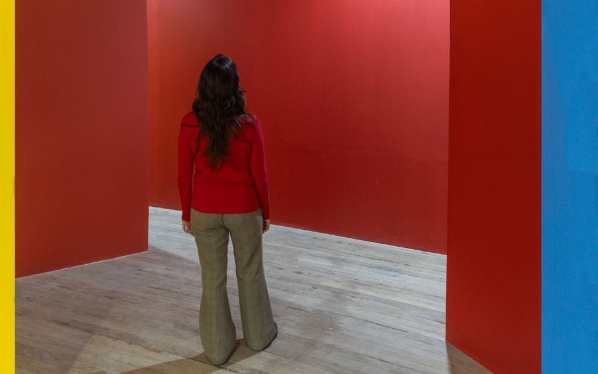
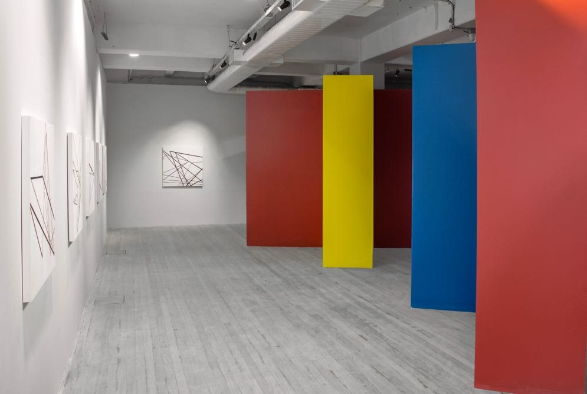

Esquina
Registro sonoro em preparação.




Paredes vermelhas, amarelas e azuis cruzam a parede fixa que separa a galeria do patamar da escada. Sensores de presença acionam alto-falantes que emitem motores, ônibus, motos e carros: oito sons que se misturam em quatro pontos e reaparecem, mais adiante, em outro lugar.
O visitante não escuta um som isolado; escuta o próprio percurso. A repetição produz uma espécie de déjà vu: a esquina da rua trazida para dentro da galeria.
- Materiais
- Madeira, tinta acrílica, áudios, sensores de presença
- Dimensões
- Dimensões variáveis
- Local
- Futuros – Arte e Tecnologia, Rio de Janeiro
- Exposição
- A Pele do Mundo (2023)